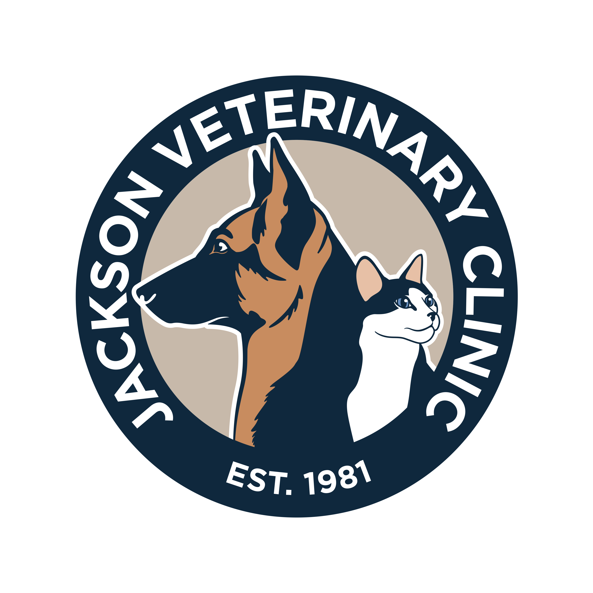

Three generations of hometown care in Jackson, Georgia. Established 1981. A dark, grounded brand built from the colors already living in the logo.
Caslon is the lettering of early American documents. It carries heritage and service without saying either word out loud. Public Sans is the U.S. federal government's own typeface — a quiet nod to the uniform.
Request an AppointmentZilla Slab is sturdy and built to last — substance over decoration, exactly what Andy asked for. It reads grounded and functional, with just enough warmth in the serifs to stay human.
Request an AppointmentBoth pair their headline face with a clean American sans for body copy. Body sizes, line-height, and the copper CTA are identical so you're judging the headline voice, not the layout.
The logo disc is navy, so it disappears on a dark background. For the live site we'll want a knockout version — the mark and lettering in warm-white/sand for use in the header and footer. I can generate that from the vector, or request a single-color version from Andy. Shown above on a sand plate for now.